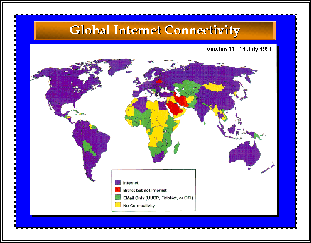
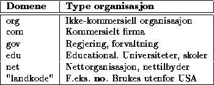

Som figur 1 viser, er så godt som alle land i verden tilkoplet Internet, og av de som ikke er tilkoplet har de fleste mulighet til i hvert fall å utveksle elektronisk post med Internet.
Vi kan med rette mao. snakke om et virkelig globalt nett, og veksten er dessuten fortsatt enorm.
Det kan være nyttig å se på ``hvem'' og ``hva'' som er tilkoplet nettet, og dette kan greiest gjøres ved å se på hvordan Internettet er delt inn rent administrativt i såkalte domener.

Under denne hatten finnes f.eks. organisasjoner som Verdensbanken og FN. Det finnes en ganske komplett liste over slike organisasjoner tilgjengelig i World Wide Web.
Dette domenet er sterkt voksende og representerer de kommersielle aktørene i Internet, dvs. helt vanlige firmaer. Dog er dette domenet stort sett bare brukt i USA og noen andre land, mens kommersielle firmaer i resten av verden befinner seg under det enkelte landsdomene, som f.eks no her i Norge.
Eksempler på store kommersielle firmaer i com domenet, er IBM, Microsoft, Digital, Sun Microsystems og Silicon Graphics. Dette var datafirmaer, men vi finner også firmaer som Bank of America, Dun & Bradstreet (reklame) og Mason-McDuffie (eiendomsmegling).
En fyldig liste over flere finnes i WWW.
Institusjoner innenfor dette domenet er stort sett amerikanske statlige organisasjoner, som f.eks. NASA og National Institue of Health - og ikke å forglemme det Hvite Hus selv. En mer komplett liste ligger også her i Web.
EDU domenet er i øyeblikket det domenet med flest registrerte maskiner, men COM domenet er det raskest voksende.
I dette domenet finnes kommersielle leverandører av nettjenester, fortrinnsvis Internet tjenester. Se f.eks. UUnet og CERFnet.
Hele verden bortsett fra USA bruker såkalte ISO landskoder som toppdomener, f.eks. no (Norge), se (Sverige), dk (Danmark), fi (Finland), uk (England), au (Australia) og de (Tyskland) for å nevne noen.
{kind=link}
{kind=link}